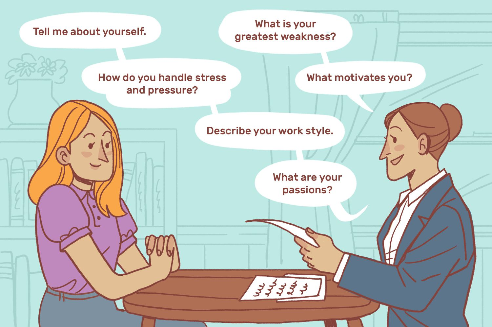

Interviews can be nerve-wracking experiences, whether you're a recent graduate entering the job market or a seasoned professional looking to advance your career. However, there's a valuable tool that can help you build confidence and improve your interview skills: participating in mock interviews.
Mock interviews are simulated job interviews designed to mimic real interview scenarios. They are typically conducted by career counselors, mentors, or peers who play the role of the interviewer. During these practice sessions, you'll be asked common interview questions and receive feedback on your performance.
Participating in mock interviews offers several significant benefits:
"Mock interviews are like dress rehearsals for the real thing. The more you practice, the better you'll perform in actual interviews."
Participating in mock interviews is a vital step in your career development. It equips you with the skills, confidence, and preparation needed to excel in real interviews. So, don't hesitate to seek out mock interview opportunities and make the most of this valuable resource.